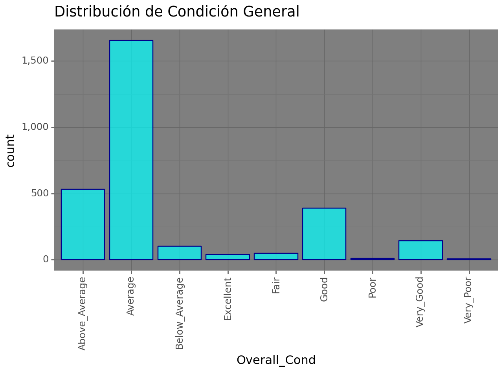
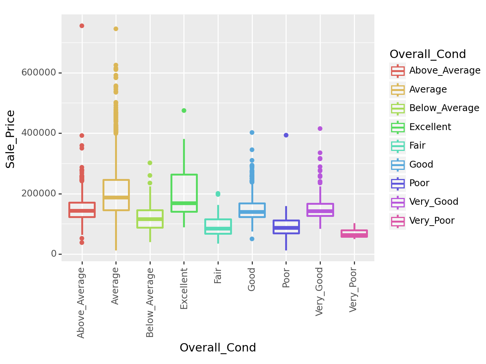
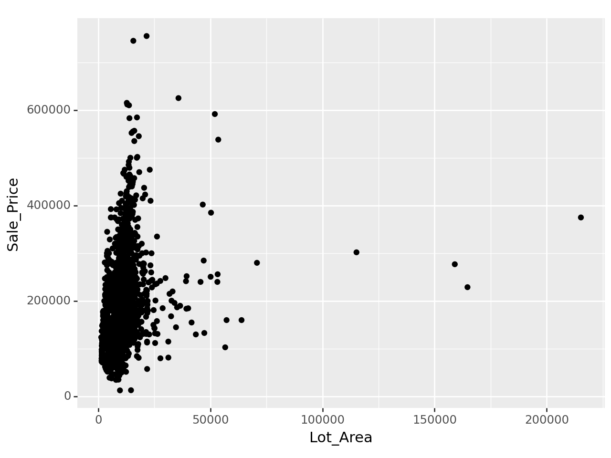
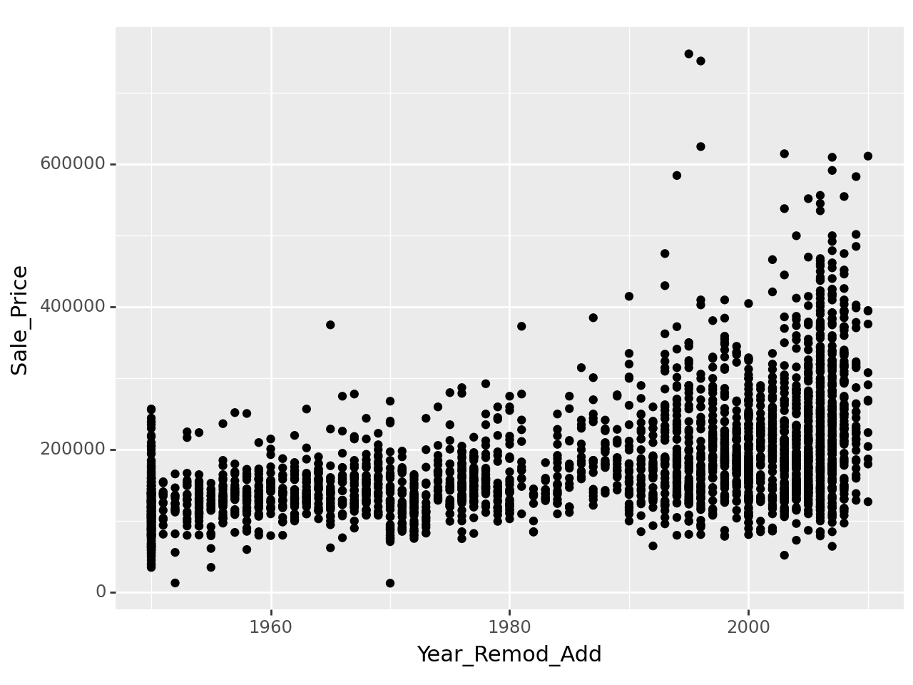
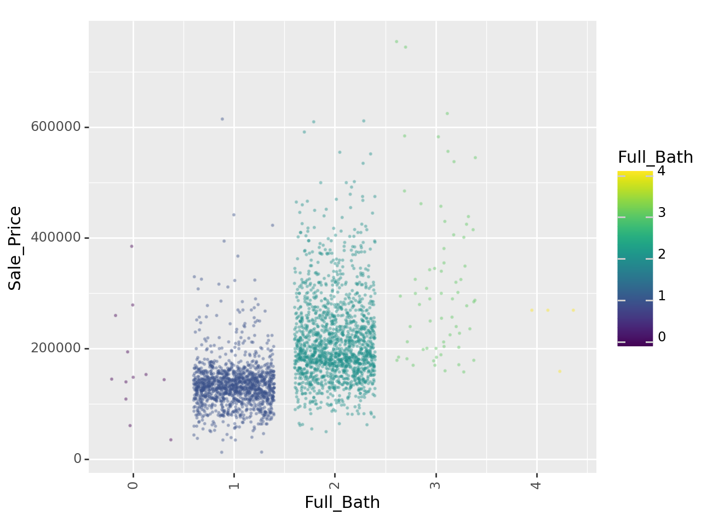

import pandas as pd
import pickle
import numpy as np
from siuba import *
import plydata as pr
from plydata.tidy import pivot_wider, pivot_longer
from plotnine import *
from mizani.formatters import comma_format, dollar_format
from plotnine.data import mpganalisis_ames
Análisis exploratorio de la base ames.csv
1. Objetivo: Predicción de los precios de venta de hogares en Ames, Iowa.
El objetivo es desarrollar un modelo que prediga el precio de venta de una determinada casa en Ames, Iowa. Los interesados en el informe esperan conocer si el precio al que se ofrece una casa está por encima o por debajo de su valor real. Se espera que aquellas subvaluadas representen una oportunidad de inversión.
\(y = mx + b\)
2. EDA: Análisis exploratorio de datos.
La base de datos que se requiere se encuentra contenida en el archivo ames.csv. En el archivo análisis_ames.py se desarrolla el modelo de predicción y en él mismo se plasma el código, en el presente documento se muestran los resultados.
2.1 Librerías:
#### lectura de archivo .csv ####
ames_housing = pd.read_csv("datos/ames.csv")2.2 EDA y GEDA
2.2.1 Descripción de los campos.
Se cuenta con 74 campos y un total de 2,930 observaciones, en donde se identifica Sale_Price como la variable a predecir.
# Información de cada uno de los campos que integran la base
ames_housing.info()<class 'pandas.core.frame.DataFrame'>
RangeIndex: 2930 entries, 0 to 2929
Data columns (total 74 columns):
# Column Non-Null Count Dtype
--- ------ -------------- -----
0 MS_SubClass 2930 non-null object
1 MS_Zoning 2930 non-null object
2 Lot_Frontage 2930 non-null int64
3 Lot_Area 2930 non-null int64
4 Street 2930 non-null object
5 Alley 2930 non-null object
6 Lot_Shape 2930 non-null object
7 Land_Contour 2930 non-null object
8 Utilities 2930 non-null object
9 Lot_Config 2930 non-null object
10 Land_Slope 2930 non-null object
11 Neighborhood 2930 non-null object
12 Condition_1 2930 non-null object
13 Condition_2 2930 non-null object
14 Bldg_Type 2930 non-null object
15 House_Style 2930 non-null object
16 Overall_Cond 2930 non-null object
17 Year_Built 2930 non-null int64
18 Year_Remod_Add 2930 non-null int64
19 Roof_Style 2930 non-null object
20 Roof_Matl 2930 non-null object
21 Exterior_1st 2930 non-null object
22 Exterior_2nd 2930 non-null object
23 Mas_Vnr_Type 1155 non-null object
24 Mas_Vnr_Area 2930 non-null int64
25 Exter_Cond 2930 non-null object
26 Foundation 2930 non-null object
27 Bsmt_Cond 2930 non-null object
28 Bsmt_Exposure 2930 non-null object
29 BsmtFin_Type_1 2930 non-null object
30 BsmtFin_SF_1 2930 non-null int64
31 BsmtFin_Type_2 2930 non-null object
32 BsmtFin_SF_2 2930 non-null int64
33 Bsmt_Unf_SF 2930 non-null int64
34 Total_Bsmt_SF 2930 non-null int64
35 Heating 2930 non-null object
36 Heating_QC 2930 non-null object
37 Central_Air 2930 non-null object
38 Electrical 2930 non-null object
39 First_Flr_SF 2930 non-null int64
40 Second_Flr_SF 2930 non-null int64
41 Gr_Liv_Area 2930 non-null int64
42 Bsmt_Full_Bath 2930 non-null int64
43 Bsmt_Half_Bath 2930 non-null int64
44 Full_Bath 2930 non-null int64
45 Half_Bath 2930 non-null int64
46 Bedroom_AbvGr 2930 non-null int64
47 Kitchen_AbvGr 2930 non-null int64
48 TotRms_AbvGrd 2930 non-null int64
49 Functional 2930 non-null object
50 Fireplaces 2930 non-null int64
51 Garage_Type 2930 non-null object
52 Garage_Finish 2930 non-null object
53 Garage_Cars 2930 non-null int64
54 Garage_Area 2930 non-null int64
55 Garage_Cond 2930 non-null object
56 Paved_Drive 2930 non-null object
57 Wood_Deck_SF 2930 non-null int64
58 Open_Porch_SF 2930 non-null int64
59 Enclosed_Porch 2930 non-null int64
60 Three_season_porch 2930 non-null int64
61 Screen_Porch 2930 non-null int64
62 Pool_Area 2930 non-null int64
63 Pool_QC 2930 non-null object
64 Fence 2930 non-null object
65 Misc_Feature 106 non-null object
66 Misc_Val 2930 non-null int64
67 Mo_Sold 2930 non-null int64
68 Year_Sold 2930 non-null int64
69 Sale_Type 2930 non-null object
70 Sale_Condition 2930 non-null object
71 Sale_Price 2930 non-null int64
72 Longitude 2930 non-null float64
73 Latitude 2930 non-null float64
dtypes: float64(2), int64(32), object(40)
memory usage: 1.7+ MB2.2.2 Variables numéricas. Los estadísticos generales para Sale_Price son los siguientes:
(
ames_housing >>
select(_.Sale_Price) >>
summarize(
Mean_Sale_Price = _.Sale_Price.mean().round(1),
Median_Sale_Price = _.Sale_Price.median().round(1),
Std_Sale_Price = _.Sale_Price.std().round(1),
Kurtosis_Sale_Price = _.Sale_Price.kurtosis().round(1),
)
)| Mean_Sale_Price | Median_Sale_Price | Std_Sale_Price | Kurtosis_Sale_Price | |
|---|---|---|---|---|
| 0 | 180796.1 | 160000.0 | 79886.7 | 5.1 |
(
ames_housing >>
select(_.Sale_Price) >>
summarize(
Asimetria_Sale_Price = _.Sale_Price.skew().round(1),
Max_Sale_Price = _.Sale_Price.max().round(1),
Min_Sale_Price = _.Sale_Price.min().round(1),
)
)| Asimetria_Sale_Price | Max_Sale_Price | Min_Sale_Price | |
|---|---|---|---|
| 0 | 1.7 | 755000 | 12789 |
(
ames_housing >>
select(_.Sale_Price) >>
summarize(
Q1_Sale_Price = _.Sale_Price.quantile(q = .25),
Q2_Sale_Price = _.Sale_Price.quantile(q = .5),
Q3_Sale_Price = _.Sale_Price.quantile(q = .75),
)
)| Q1_Sale_Price | Q2_Sale_Price | Q3_Sale_Price | |
|---|---|---|---|
| 0 | 129500.0 | 160000.0 | 213500.0 |
Se trata de una distribución de datos leptocúrtica (de forma puntiaguda) y la asimetría, que es positiva, indica que el gráfico tiene cola hacia la derecha. Los datos de bigotes los usaremos en el gráfico de caja (boxplot). Siendo la media mayor que la mediana, se infiere que los datos están sesgados positivamente debido a que hay valores muy altos que tiran o jalan la media hacia arriba.
# Histograma Sale_Price
(
ames_housing >>
ggplot(aes(x = "Sale_Price")) +
geom_histogram(color = "pink", fill = "blue", bins=30) +
scale_x_continuous(labels=dollar_format()) +
scale_y_continuous(labels=comma_format()) +
ggtitle("Distribución de precio")
)
<Figure Size: (640 x 480)>El gráfico de caja muestra un número importante de datos atípicos por encima de un precio de $338,931.00:
(
ames_housing >>
ggplot() +
geom_boxplot(aes(x = 0, y = "Sale_Price"), color= "blue", fill= "lightblue") +
scale_y_continuous(labels = dollar_format(prefix='$', digits=0, big_mark=',')) +
theme(axis_text_x=element_blank()) +
ggtitle("Distribución de Precio de Venta")
)
<Figure Size: (640 x 480)>Datos atípicos
Estableciendo como atípicos aquellos datos que están 1.5 veces el RIC por encima del cuartil 3, tenemos lo siguiente:
(
ames_housing >>
filter( (_.Sale_Price > 339500) ) >>
select (_.Overall_Cond, _.Lot_Area, _.Neighborhood, _.Heating_QC, _.Sale_Price)
)| Overall_Cond | Lot_Area | Neighborhood | Heating_QC | Sale_Price | |
|---|---|---|---|---|---|
| 15 | Average | 53504 | Stone_Brook | Excellent | 538000 |
| 17 | Poor | 11394 | Stone_Brook | Excellent | 394432 |
| 36 | Average | 12858 | Northridge_Heights | Excellent | 376162 |
| 38 | Average | 10159 | Northridge_Heights | Excellent | 395192 |
| 44 | Average | 12919 | Northridge_Heights | Excellent | 611657 |
| ... | ... | ... | ... | ... | ... |
| 2666 | Excellent | 22950 | Old_Town | Excellent | 475000 |
| 2737 | Very_Good | 19800 | Edwards | Good | 415000 |
| 2883 | Average | 5748 | Crawford | Excellent | 375000 |
| 2901 | Average | 11443 | Timberland | Excellent | 369900 |
| 2902 | Average | 11577 | Timberland | Excellent | 359900 |
137 rows × 5 columns
De esos 137 registros, el 93% cuentan con sistema de aire acondicionado excelente.
(
ames_housing >>
filter((_.Heating_QC == "Excellent") & (_.Sale_Price >= 339500)) >> select (_.Overall_Cond, _.Lot_Area, _.Neighborhood, _.Heating_QC, _.Sale_Price)
)| Overall_Cond | Lot_Area | Neighborhood | Heating_QC | Sale_Price | |
|---|---|---|---|---|---|
| 15 | Average | 53504 | Stone_Brook | Excellent | 538000 |
| 17 | Poor | 11394 | Stone_Brook | Excellent | 394432 |
| 36 | Average | 12858 | Northridge_Heights | Excellent | 376162 |
| 38 | Average | 10159 | Northridge_Heights | Excellent | 395192 |
| 44 | Average | 12919 | Northridge_Heights | Excellent | 611657 |
| ... | ... | ... | ... | ... | ... |
| 2461 | Average | 13162 | Somerset | Excellent | 405749 |
| 2666 | Excellent | 22950 | Old_Town | Excellent | 475000 |
| 2883 | Average | 5748 | Crawford | Excellent | 375000 |
| 2901 | Average | 11443 | Timberland | Excellent | 369900 |
| 2902 | Average | 11577 | Timberland | Excellent | 359900 |
128 rows × 5 columns
Por último, el mayor número de propiedades con precios más altos se concentra en los barrios Northridge, Northrige Heights y Stone Brook, que, como se verá más adelante, son los barrios “más caros”.
(
ames_housing >>
filter((_.Heating_QC == "Excellent") & (_.Sale_Price >= 339500)) >>
select(_.Neighborhood) >> arrange(_.Neighborhood) >> count(_.Neighborhood)
)| Neighborhood | n | |
|---|---|---|
| 0 | College_Creek | 5 |
| 1 | Crawford | 3 |
| 2 | Gilbert | 1 |
| 3 | Northridge | 21 |
| 4 | Northridge_Heights | 60 |
| 5 | Old_Town | 1 |
| 6 | Somerset | 8 |
| 7 | Stone_Brook | 22 |
| 8 | Timberland | 7 |
Las variables numéricas que se considera muestran relación con la variable a predecir Sale_Price son las siguientes:
- Area (Lot_Area).
- Año de construcción (Year_Built).
- Año de remodelación (Year_Remod_Add).
- Baños completos (Full_Bath).
- Lugares de estacionamiento (Garage_Cars).
Coordenadas geográficas
Es importante destacar que dentro de las variables numéricas, con formato float (enteros y decimales), se encuentran los campos Latitude y Longitude, los cuales hacen referencia a las coordenadas geográficas exactas de cada inmueble que se pueden consultar en Google Maps.
Si consultamos la casa más barata, y la más cara en toda la base, tenemos las imágenes siguientes, obtenidas con base en sus coordenadas geográficas:
(
ames_housing >> select(_.MS_SubClass, _.Overall_Cond, _.Latitude, _.Longitude, _.Sale_Price) >> filter((_.Sale_Price == _.Sale_Price.min()) | (_.Sale_Price == _.Sale_Price.max()))
)| MS_SubClass | Overall_Cond | Latitude | Longitude | Sale_Price | |
|---|---|---|---|---|---|
| 181 | One_Story_1945_and_Older | Poor | 42.030388 | -93.606789 | 12789 |
| 1767 | Two_Story_1946_and_Newer | Above_Average | 42.051980 | -93.657271 | 755000 |


Da click en las imágenes para dirigirte al inmueble correspondiente en Google Maps.
2.2.3 Variables categóricas.
Las variables categóricas que se considera muestran relación con la variable a predecir Sale_Price son las siguientes:
- Barrio (Neighborhood).
- Estado general (Overall_Cond).
- Tipo de casa (House_Style).
- Aire acondicionado (Heating_QC).
Barrio (Neighborhood)
Existen 28 barrios; la mayoría de las casas se concentran en North Ames, College Creek, Old Town y Edwards (39%):
# Variables categóricas
ames_housing['Neighborhood'].value_counts()Neighborhood
North_Ames 443
College_Creek 267
Old_Town 239
Edwards 194
Somerset 182
Northridge_Heights 166
Gilbert 165
Sawyer 151
Northwest_Ames 131
Sawyer_West 125
Mitchell 114
Brookside 108
Crawford 103
Iowa_DOT_and_Rail_Road 93
Timberland 72
Northridge 71
Stone_Brook 51
South_and_West_of_Iowa_State_University 48
Clear_Creek 44
Meadow_Village 37
Briardale 30
Bloomington_Heights 28
Veenker 24
Northpark_Villa 23
Blueste 10
Greens 8
Green_Hills 2
Landmark 1
Name: count, dtype: int64Los precios promedio por barrio nos indican que Northridge, Stone Brook y Northridge Heights son barrios cuyo promedio casi duplica el priomedio general de las casas en Ames.
# Precio de venta promedio por barrio
(
ames_housing >>
group_by(_.Neighborhood) >>
summarize(Mean_Sale_Price = _.Sale_Price.mean().round(0) ) >>
arrange(-_.Mean_Sale_Price)
)| Neighborhood | Mean_Sale_Price | |
|---|---|---|
| 17 | Northridge | 330319.0 |
| 25 | Stone_Brook | 324229.0 |
| 18 | Northridge_Heights | 322018.0 |
| 9 | Green_Hills | 280000.0 |
| 27 | Veenker | 248315.0 |
| 26 | Timberland | 246600.0 |
| 23 | Somerset | 229707.0 |
| 4 | Clear_Creek | 208662.0 |
| 6 | Crawford | 207551.0 |
| 5 | College_Creek | 201803.0 |
| 0 | Bloomington_Heights | 196662.0 |
| 10 | Greens | 193531.0 |
| 8 | Gilbert | 190647.0 |
| 19 | Northwest_Ames | 188407.0 |
| 22 | Sawyer_West | 184070.0 |
| 14 | Mitchell | 162227.0 |
| 15 | North_Ames | 145097.0 |
| 1 | Blueste | 143590.0 |
| 16 | Northpark_Villa | 140711.0 |
| 12 | Landmark | 137000.0 |
| 21 | Sawyer | 136751.0 |
| 24 | South_and_West_of_Iowa_State_University | 135072.0 |
| 7 | Edwards | 130843.0 |
| 3 | Brookside | 124756.0 |
| 20 | Old_Town | 123992.0 |
| 2 | Briardale | 105608.0 |
| 11 | Iowa_DOT_and_Rail_Road | 103753.0 |
| 13 | Meadow_Village | 95756.0 |
Estado general (Overall_Cond)
Tabla de precios de venta por Estado general del inmueble, comparando las métricas básicas, en particular la relación media a mediana (sesgo).
(
ames_housing >>
group_by(_.Overall_Cond) >>
summarize(Q1 = _.Sale_Price.quantile(q = .25), MEDIA = _.Sale_Price.mean().round(1), MEDIANA = _.Sale_Price.median().round(1), Q3 = _.Sale_Price.quantile(q = .75), STDEV = _.Sale_Price.std().round(1)) >>
mutate(SESGO = if_else(_.MEDIA > _.MEDIANA, "DERECHA", "IZQUIERDA"))
)| Overall_Cond | Q1 | MEDIA | MEDIANA | Q3 | STDEV | SESGO | |
|---|---|---|---|---|---|---|---|
| 0 | Above_Average | 123000.00 | 150377.9 | 142500.0 | 170000.0 | 50557.8 | DERECHA |
| 1 | Average | 145025.00 | 206027.0 | 187000.0 | 245262.5 | 87026.5 | DERECHA |
| 2 | Below_Average | 88000.00 | 120923.9 | 115000.0 | 146000.0 | 44730.4 | DERECHA |
| 3 | Excellent | 140000.00 | 199765.9 | 168000.0 | 263400.0 | 88072.4 | DERECHA |
| 4 | Fair | 67250.00 | 95994.0 | 84500.0 | 115050.0 | 38804.5 | DERECHA |
| 5 | Good | 122925.00 | 153002.0 | 139700.0 | 168500.0 | 49042.6 | DERECHA |
| 6 | Poor | 69375.00 | 116062.1 | 86000.0 | 111250.0 | 104754.0 | DERECHA |
| 7 | Very_Good | 126793.75 | 154775.5 | 141750.0 | 167125.0 | 51784.6 | DERECHA |
| 8 | Very_Poor | 58000.00 | 69981.3 | 62500.0 | 79184.5 | 20092.9 | DERECHA |
Hay inidicios de que el precio tiene relación directa con la condición general del inmueble.
(
ames_housing >>
ggplot( aes( x = "Overall_Cond")) +
geom_bar( color= "darkblue", fill= "cyan", alpha= 0.7) +
scale_y_continuous(labels = comma_format()) +
ggtitle("Distribución de Condición General") +
theme_dark() +
theme(axis_text_x=element_text(angle=90))
)
<Figure Size: (640 x 480)>(
ames_housing >>
ggplot(aes(y = "Sale_Price", x = "Overall_Cond", color = "Overall_Cond")) +
geom_jitter(size = 0.3, alpha = 0.3) + theme(axis_text_x=element_text(angle=90))
)
<Figure Size: (640 x 480)>(
ames_housing >>
ggplot(aes(y = "Sale_Price", x = "Overall_Cond", color = "Overall_Cond")) +
geom_boxplot(size=1, alpha= 0.3) + theme(axis_text_x=element_text(angle=90))
)
<Figure Size: (640 x 480)>(
ggplot(ames_housing, aes(x = "Sale_Price", y = "Year_Remod_Add", color = "Overall_Cond")) +
geom_point() + geom_smooth(method = "lm") +
facet_wrap("Overall_Cond") + theme(axis_text_x=element_text(angle=90)
))
<Figure Size: (640 x 480)>Area (Lot_Area)
(
ames_housing >> select(_.MS_SubClass, _.Overall_Cond, _.Lot_Area, _.Sale_Price) >> filter((_.Lot_Area == _.Lot_Area.min()) | (_.Lot_Area == _.Lot_Area.max()))
)| MS_SubClass | Overall_Cond | Lot_Area | Sale_Price | |
|---|---|---|---|---|
| 935 | Two_Story_PUD_1946_and_Newer | Above_Average | 1300 | 124000 |
| 956 | One_Story_1946_and_Newer_All_Styles | Average | 215245 | 375000 |
Los inmuebles en Ames, Iowa, van desde los 1,300 pies cuadrados (396 mts. cuadrados) hasta los 215,245 pies cuadrados (65,607 mts. cuadrados).
correlation = ames_housing['Sale_Price'].corr(ames_housing['Lot_Area'])
print(f'La correlación entre el tamaño de los lotes o área de las casas de Ames y su precio de venta es {correlation.round(2)}')
correlation.round(2)La correlación entre el tamaño de los lotes o área de las casas de Ames y su precio de venta es 0.270.27Lo anterior es indicativo de que hay una correlación débil que muestra que no es una variable que influye en el precio de venta.
(
ames_housing >>
ggplot(aes(x = "Lot_Area", y = "Sale_Price")) +
geom_point()
)
<Figure Size: (640 x 480)>Año de construcción / remodelación (Year_Built, Year_Remod_Add)
correlation = ames_housing['Sale_Price'].corr(ames_housing['Year_Remod_Add'])
print(f'La correlación entre el año de construcción / remodelación y su precio de venta es {correlation.round(2)}')
correlation.round(2)La correlación entre el año de construcción / remodelación y su precio de venta es 0.530.53De modo que se considera que hay una correlación moderada que indica que sí es una variable que influye en el precio de venta.
(
ames_housing >>
ggplot(aes(x = "Year_Remod_Add", y = "Sale_Price")) +
geom_point()
)
<Figure Size: (640 x 480)>Baños completos (Full_Bath)
correlation = ames_housing['Sale_Price'].corr(ames_housing['Full_Bath'])
print(f'La correlación entre el número de baños completos en las casas de Ames y su precio de venta es {correlation.round(2)}')
correlation.round(2)La correlación entre el número de baños completos en las casas de Ames y su precio de venta es 0.550.55Se considera que hay una correlación moderada que indica que sí es una variable que influye en el precio de venta.
(
ames_housing >>
ggplot(aes(y = "Sale_Price", x = "Full_Bath", color = "Full_Bath")) +
geom_jitter(size = 0.3, alpha = 0.3) + theme(axis_text_x=element_text(angle=90))
)
<Figure Size: (640 x 480)>Tipo de casa (House_Style)
(
ames_housing >>
ggplot(aes(y = "Sale_Price", x = "House_Style", color = "House_Style")) +
geom_jitter(size = 0.3, alpha = 0.3) + theme(axis_text_x=element_text(angle=90))
)
<Figure Size: (640 x 480)>El mayor número de registros se agrupa en las casas clásicas de uno y dos pisos.
Lugares de estacionamiento (Garage_Cars)
correlation = ames_housing['Sale_Price'].corr(ames_housing['Garage_Cars'])
print(f'La correlación entre el número de carros que caben en el garage de las casas de Ames y su precio de venta es {correlation.round(2)}')
correlation.round(2)La correlación entre el número de carros que caben en el garage de las casas de Ames y su precio de venta es 0.650.65Por consiguiente se considera que hay una correlación moderada que indica que sí es una variable que influye en el precio de venta.
(
ames_housing >>
ggplot(aes(y = "Sale_Price", x = "Garage_Cars", color = "Garage_Cars")) +
geom_jitter(size = 0.3, alpha = 0.3) + theme(axis_text_x=element_text(angle=90))
)
<Figure Size: (640 x 480)>Aire acondicionado (Heating_QC)
Como se indicó anteriormente en el análisis de datos atípicos en la base de datos, el aire acondicionado juega un papel importante.
El gráfico siguiente, muestra que los inmuebles con aire de típico a excelente, concentran la mayor cantidad de resultados.
Con base en consulta en Perplexity AI (es un motor de búsqueda basado en inteligencia artificial), los inviernos son muy fríos:
Durante el invierno, la temperatura máxima diaria promedio permanece alrededor de 2°C y está nublado o mayormente nublado aproximadamente el 54% del tiempo[2]. El mes de enero es el más frío, con una temperatura media de -7°C.
https://www.perplexity.ai/search/Cmo-es-el-f3bx8CCRQ_ytxJ2tGJVKbw?s=c
(
ames_housing >>
ggplot(aes(y = "Sale_Price", x = "Heating_QC", color = "Heating_QC")) +
geom_jitter(size = 0.3, alpha = 0.3) + theme(axis_text_x=element_text(angle=90))
)
<Figure Size: (640 x 480)>3. Conclusión.
Las variables útiles para predecir el Precio de Venta de una determinada casa en Ames, Iowa son las siguientes:
Barrio (Neighborhood).
Estado general (Overall_Cond).
Tipo de casa (House_Style).
Aire acondicionado (Heating_QC).
Año de remodelación (Year_Remod_Add).
Baños completos (Full_Bath).
Se considera importante desarrollar un modelo integral propio de la ciencia de datos para predecir mejor el precio de venta con base en éstas variables.